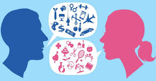
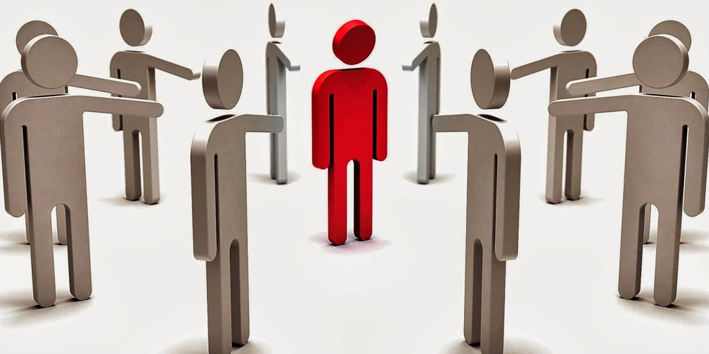
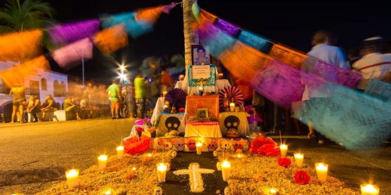

"Estereotipos creencias y costumbres"
Los estereotipos son imágenes mentales que los individuos construimos acerca de los otros, representaciones esquemáticas y simplificadas de un grupo de personas al que se define a partir de ciertas características representativas. Estas características pueden ser ciertas o falsas pero, al consistir en una simplificación extrema de una realidad compleja, los estereotipos siempre son interpretaciones limitadas e incompletas.
Los estereotipos son construcciones sociales que adquirimos y asimilamos, asumiéndolas como válidas; suelen transmitirse socialmente por generaciones y nos llevan a hacer afirmaciones generales, ya sean positivas, negativas o incluso neutras, sobre el grupo estereotipado.
Los estereotipos suelen generar prejuicios, ya que inducen a prejuzgar, es decir, a emitir un juicio sin tener la suficiente información que lo sustente. Los prejuicios, como ideas preconcebidas, suelen basarse en rumores o en una supuesta experiencia previa de las personas que forman nuestro grupo. Solemos tener prejuicios favorables a los grupos con los que nos identificamos y prejuicios negativos hacia los que percibimos como diferentes.
Los prejuicios van más allá de la simple catalogación de las personas ya que condicionan nuestra interacción con ellas. Siempre que actuamos guiados por nuestros prejuicios estamos siendo injustos, pues nos basamos en ideas preconcebidas sobre la otra persona, antes incluso de conocerla.
Los prejuicios y los estereotipos suelen hacer referencia a la identidad de las personas y grupos, como el sexo, la religión, la ideología política, el origen étnico, las ocupaciones, los niveles socioeconómicos, los gustos personales, la apariencia física, etcétera.
Los estereotipos bloquean nuestra capacidad crítica y facilitan que tengamos actitudes prejuiciosas, que pueden desencadenar en prácticas de discriminación e intolerancia.

DIFERENCIAS PREJUICIO‑ESTEREOTIPO ESTEREOTIPO
Los estereotipos se diferencian de los prejuicios en estos dos aspectos: se trata de e trata de
un conjunto de ideas y se suelen atribuir a grupos de personas. de personas.
El prejuicio es un juicio o valoración sin experiencia directa o real, generalmente
negativo. También implica una emoción de carácter negativo sobre un grupo o
persona. Es individual, es decir, propio de una persona. Por ejemplo: enjuiciar a
cualquier persona sin conocerla. «Esta persona no me inspira confianza porque es
gitano”.
El estereotipo es una imagen mental muy simplificada. Es colectivo. No se puede
estereotipar a una persona, ya que se trata de una imagen compartida por una
colectividad. Es la concreción del prejuicio. Por ejemplo: “Los gitanos (todos,
generalizando) son unos ladrones”.

Costumbres y tradiciones
Los seres humanos creamos cultura. Nuestras formas de pensar, de sentir y de actuar, la lengua que hablamos, nuestras creencias, la comida y el arte, son algunas expresiones de nuestra cultura.
Este conjunto de saberes y experiencias se transmite de generación en generación por diferentes medios. Los niños aprenden de los adultos y los adultos de los ancianos. Aprenden de lo que oyen y de lo que leen; aprenden también de lo que ven y experimentan por sí mismos en la convivencia cotidiana. Así se heredan las tradiciones.
Mediante la transmisión de sus costumbres y tradiciones, un grupo social intenta asegurar que las generaciones jóvenes den continuidad a los conocimientos, valores e intereses que los distinguen como grupo y los hace diferentes a otros.
Conservar las tradiciones de una comunidad o de un país significa practicar las costumbres, hábitos, formas de ser y modos de comportamiento de las personas.
